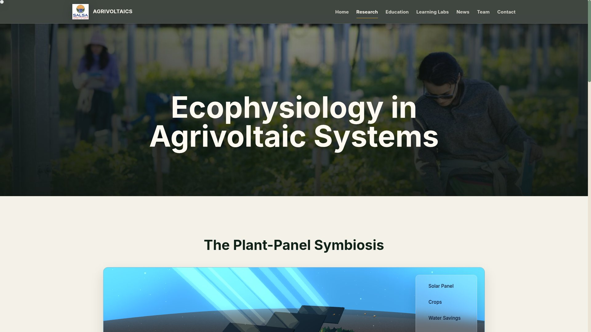
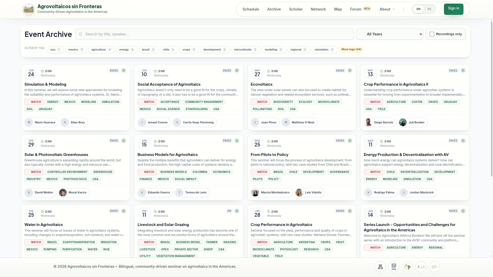

Selected
Work
Three platforms, one thread: making complex systems — carbon markets, research science, cross-border communities — feel simple on screen.
OffsetMap
2023CLIMATE
A platform for discovering and supporting carbon-offsetting projects worldwide — forest conservation, renewable energy and beyond — explored through interactive maps instead of spreadsheets.
- Interactive cartography of offset projects across the globe
- User accounts with Google sign-in and saved contributions
- Project onboarding flow for conservation & renewable initiatives
- Video-tutorial onboarding — shipped with a guided walkthrough

SALSAV
2024RESEARCH
The digital home of the Semi-arid Lab for Scaling Agrivoltaics — translating published food-energy-water research into interactive charts, explorable diagrams and learning hubs that scientists, farmers and policymakers can all use.
- Interactive "Plant-Panel Symbiosis" diagram — drag to explore microclimate layers
- Published-data charts: crop yield & water-use efficiency under panels
- Learning Labs network, education hub, news and team sections
- Cinematic video hero and full editorial design system


AV sin
Fronteras
2025PLATFORM
Agrovoltaicos sin Fronteras is a bilingual, community-driven seminar platform connecting agrivoltaics researchers from Arizona to Argentina — biweekly talks, a searchable archive and a growing scholar network across five institutions.
- Full EN/ES internationalization with instant language switching
- Seminar schedule, discussion threads, files and speaker profiles
- Deep archive: search, year filters, 44+ topic tags, recordings
- Scholar directory, network map and community forum (beta)


Screens & Details